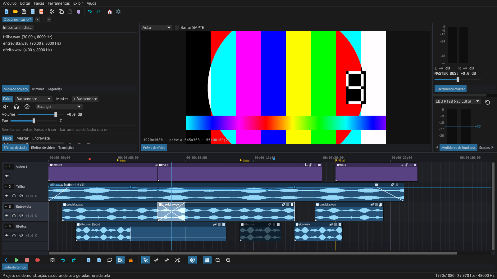
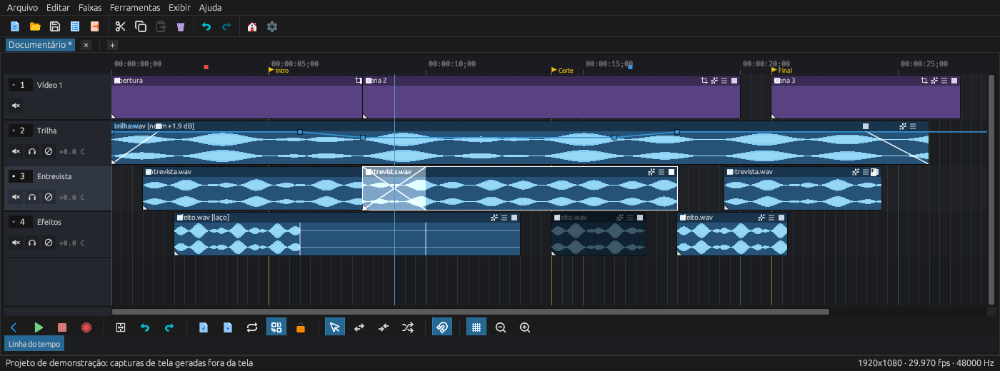
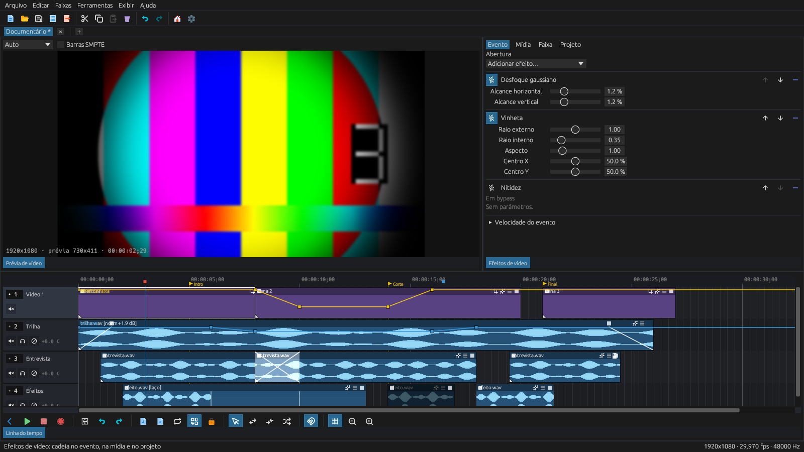
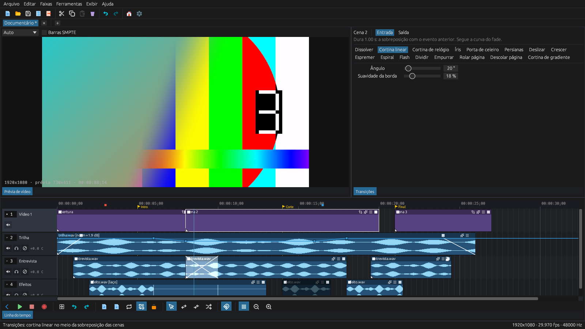
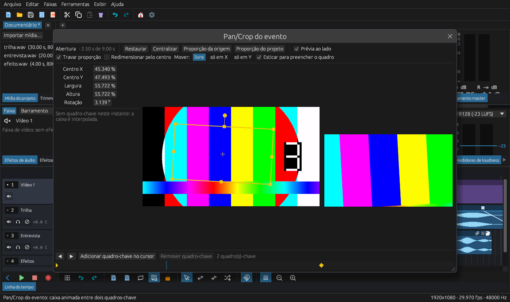
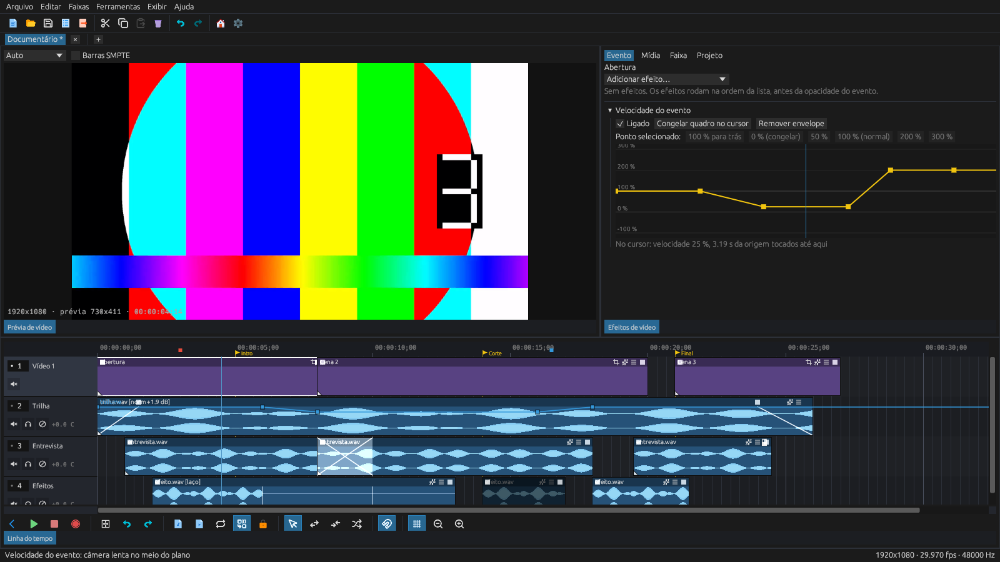
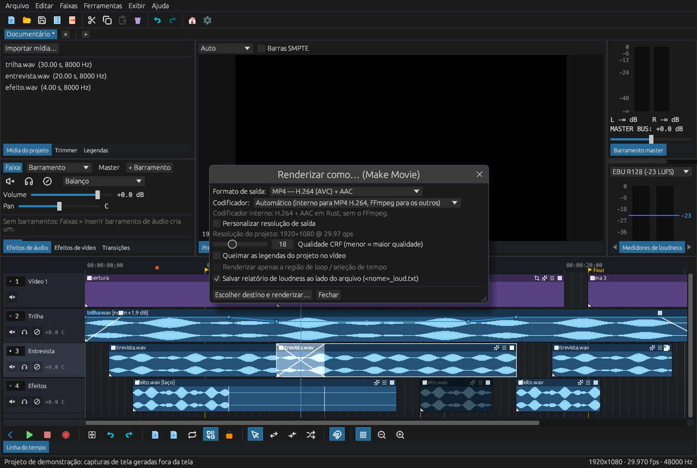
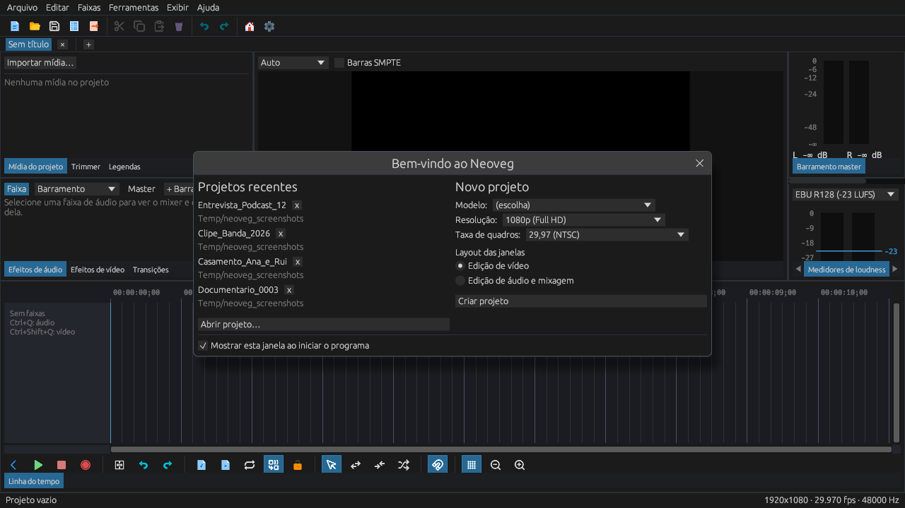

Edite vídeo e áudio com um motor 100% Rust
Neoveg é um editor não linear de código aberto: linha do tempo multifaixa, mixer com barramentos, efeitos e transições na GPU e exportação H.264/AAC escrita em Rust puro.

O que o Neoveg faz
Um espaço de trabalho acoplável, pensado para quem edita todo dia: tudo tem atalho, desfazer e abas por projeto.
Linha do tempo
Faixas de vídeo e áudio com forma de onda real, régua SMPTE com drop-frame, crossfade automático, envelopes, marcadores e regiões.
Ferramentas de edição
Mover, aparar, dividir, Slip, Slide, Shuffle, ripple, stretch, agrupamento e alinhamento a quadros, ao cursor e a outros eventos.
Mixer de áudio
Volume, pan, mudo e solo por faixa, até 26 barramentos com sends, medidor de loudness BS.1770 e efeitos VST3 e CLAP.
Efeitos e transições
Correção de cor, curvas, croma key, desfoque, vinheta e mais, rodando em compute shaders wgpu com referência na CPU testada.
Pan/Crop e movimento
Quadros-chave de posição, zoom e rotação no evento e na trilha, para picture-in-picture e animações.
Velocidade variável
Envelope de velocidade de −100 % a 300 %, com congelamento, reverso e câmera lenta no mesmo evento.
Legendas por Whisper
Transcrição automática de fala em Rust puro, com nove idiomas e detecção automática, direto na aba Legendas.
Vários projetos
Abas por projeto e sub-projetos aninhados que aparecem como um único evento na linha do tempo do projeto pai.
Troca com outros editores
Importa e exporta EDL CMX 3600, XML do Final Cut Pro 7, FCPXML e OpenTimelineIO.
Conheça as telas
Todas as imagens abaixo foram geradas pelo próprio programa, fora da tela, com um projeto de demonstração.
Linha do tempo
Forma de onda real, crossfade automático onde dois eventos se sobrepõem, envelope de volume, marcadores e interruptores por evento: mudo, trava, laço, normalizar e inverter fase.

Efeitos de vídeo
Cadeias de efeitos por evento, mídia, faixa ou projeto. Ao arrastar um controle, a prévia mostra o resultado ao vivo antes de soltar.

Transições
Dezesseis transições na GPU — dissolver, íris, relógio, espiral, rolar página e outras — que seguem a curva do fade do evento.

Pan/Crop e movimento da trilha
Recorte, zoom e rotação com quadros-chave. Posicione uma camada menor no quadro para fazer picture-in-picture.

Velocidade do evento
Desenhe a velocidade ao longo do clipe. O evento mantém o comprimento; o envelope decide quanto da mídia toca.

Renderização
MP4 H.264 com áudio AAC escrito em Rust puro, com qualidade CRF e relatório de loudness. FFmpeg é opcional, para HEVC, ProRes e WebM.

Boas-vindas e projetos
Projetos recentes, novo projeto com modelo, resolução e taxa de quadros (de SD a 8K), e dois layouts iniciais: edição de vídeo ou de áudio.

Tecnologia
Um único workspace, em puro Rust.
- Interface com
egui/eframee painéis acopláveis (egui_dock) - Gráficos e efeitos na GPU com
wgpu - Áudio com
cpalesymphonia - H.264, AAC e MP4 em crates próprias (
neoveg_h264,neoveg_aac,neoveg_media) - Projetos
.neoveg(ZIP com JSON), autosave e recuperação após falha - Reprodução de vídeo sincronizada ao relógio de áudio
- Interface em pt-BR, en-US, de-DE, es-ES, fr-FR, ru-RU, ja-JP e zh-CN
- Licença MIT, código aberto
O Neoveg está em desenvolvimento ativo. Hoje o foco é o Windows 10/11; Linux e macOS rodam na integração contínua em modo experimental, até a fase do porte.
Baixar para Windows
Versão 2.1.0 para Windows 10 e 11 (64 bits), portátil: extraia o ZIP e abra neoveg.exe. Não precisa instalar nada.
SHA-256: f86fe3c9bab587962eb9276b2a80b258fa1125a498b268b297a7e933651879ff
Este pacote foi gerado em 28/10/2026 e não traz as DLLs do FFmpeg: sem elas a prévia de vídeo não decodifica. Linux e macOS ainda não têm versão.
Compilar do código-fonte
Veja as versões publicadas no GitHub ou compile você mesmo com Rust 1.88 ou mais novo.
git clone https://github.com/blackghoust9/neoveg
cd neoveg
cargo run --release -p neoveg_uiPara gerar o pacote portátil do Windows: python build_portable.py build --ffmpeg.